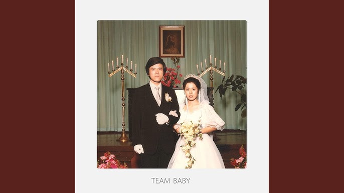
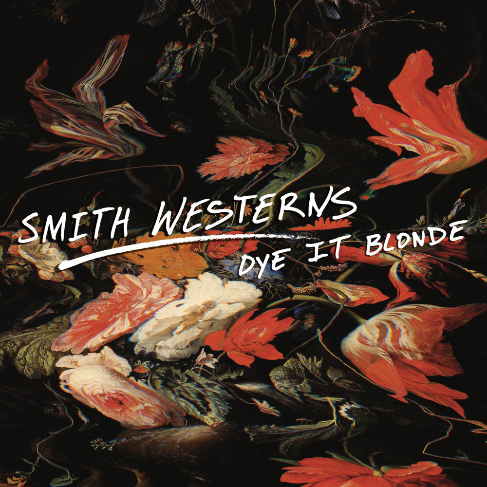
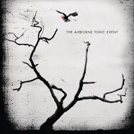
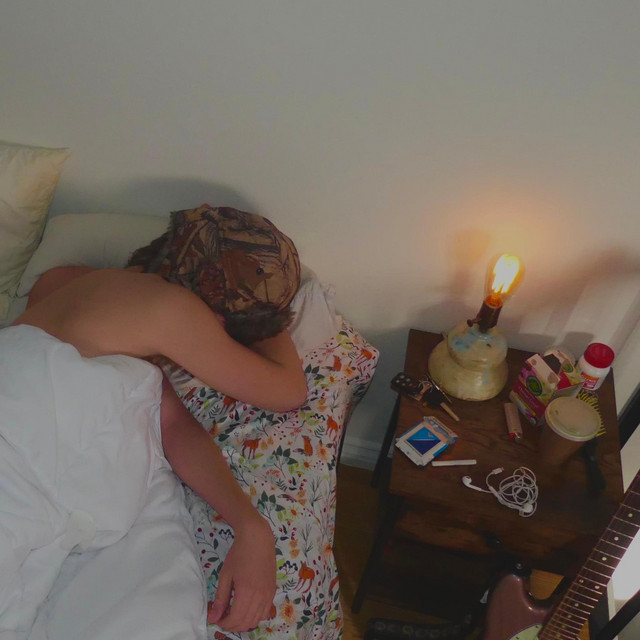
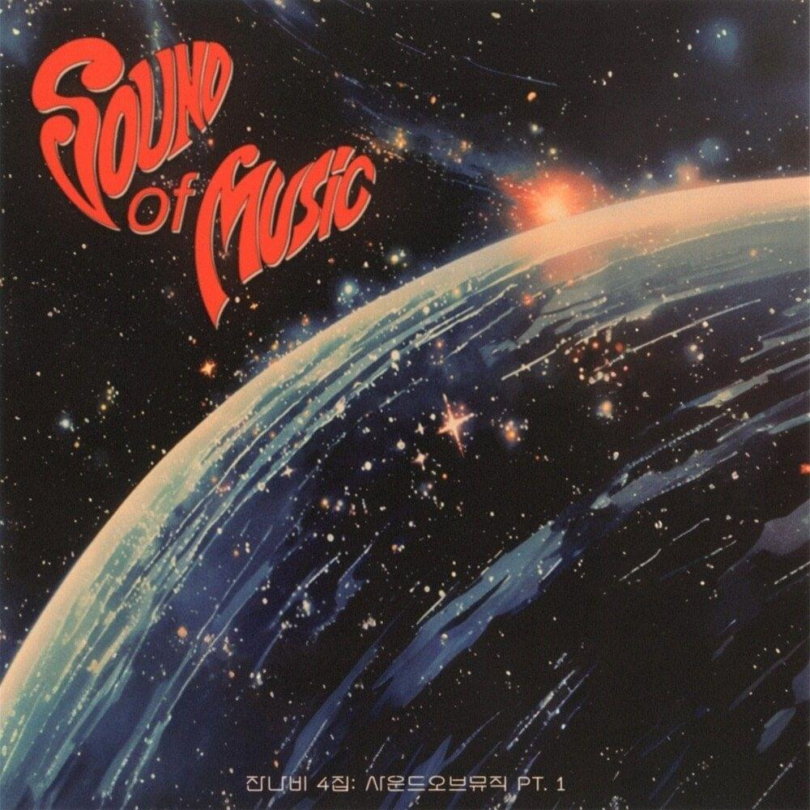

🎧 My Top Tracks
| # | Title | Album | Date Released | ⏱ |
|---|---|---|---|---|
| 1 |

EVERYTHING
The Black Skirts |
Team Baby | Jan 29, 2016 | 5:03 |
| This song being at top 1 i'snt an exaggeration. I've discovered it in mid 2020, and from time to time i found myself growing with it. It has a euphoric, dreamy vibe, and melodies that feels like my soul is floating. A very special song that helped me through my tough phases. | ||||
| 2 |
Intercourse
Malcolm Todd |
Shower Shoes | Mar 24, 2023 | 3:09 |
| Now one of the most underrated in this list. Playing this song reminds of my best life with my cousins and siblings back in our province, Mindoro Oriental. The melody and tone has a relaxed and soft-dreamy vibe that instantly reminds me of the beach, and my best and fun experiences with my loved ones. | ||||
| 3 |

Imagine Pt.3
Smith Westerns |
Dye It Blonde | Jan 7, 2009 | 3:33 |
| If i were to summarize what this song sounds like in one word it'd be: "Fireworks" for how it is PACKED with instrumentals and the roaring vibe of courageness. I've discovered this song back when i was in 10th grade, 2024. This song amplified my growth and has a special place in my heart. | ||||
| 4 |
ASTEARSGOBY
JANNABI |
GRIPPIN’THEGREEN | May 10, 2022 | 3:56 |
| For me this song feels like walking in a delicate line between nostalgia and melancholy. I've discovered this song in a time i am most confused. It's the 'goodbye song' you want to play to help you move on from something or someone. If i had to sum it up: it's the kind of song that's soft and tender, but leaves a lingering ache. Like a good memory that's also a little sad. | ||||
| 5 |

Let It Happen
Tame Impala |
Currents | Mar 11, 2015 | 7:46 |
| This song feels like being lost in your own thoughts. The slow build and psychedelic production make it hypnotic. | ||||
| 6 |
Whatever
Oasis |
Time Flies | Dec 18, 1994 | 6:21 |
| This song feels like being lost in your own thoughts. The slow build and psychedelic production make it hypnotic. | ||||
| 7 |

Happiness Is Overrated
The Airborne Toxic Event |
The Airborne Toxic Event | Aug 5, 2008 | 3:12 |
| I've just recently discovered this song actually, while i was watching TVD and seeing Katherine walk out in the shower, Damon shocked and petrified. Anyway, the song is atmospheric and contemplative, it has a retro-rock vibe. Especially lyric "I'll be alone instead, i don't need anyone in this bed" is amazing to me. | ||||
| 8 |

Art House
Malcolm Todd |
Sweet Boy | Nov 7, 2023 | 2:19 |
| This song feels like being lost in your own thoughts. The slow build and psychedelic production make it hypnotic. | ||||
| 9 |

May The TENDERNESS Be With You!
JANNABI |
Legend | Mar 13, 2019 | 4:24 |
| This song feels like being lost in your own thoughts. The slow build and psychedelic production make it hypnotic. | ||||
| 10 | 
California Feelin'
The Beach Boys |
Feel Flows | Jul 19, 2019 | 2:50 |
| Write your thoughts about this song here. | ||||